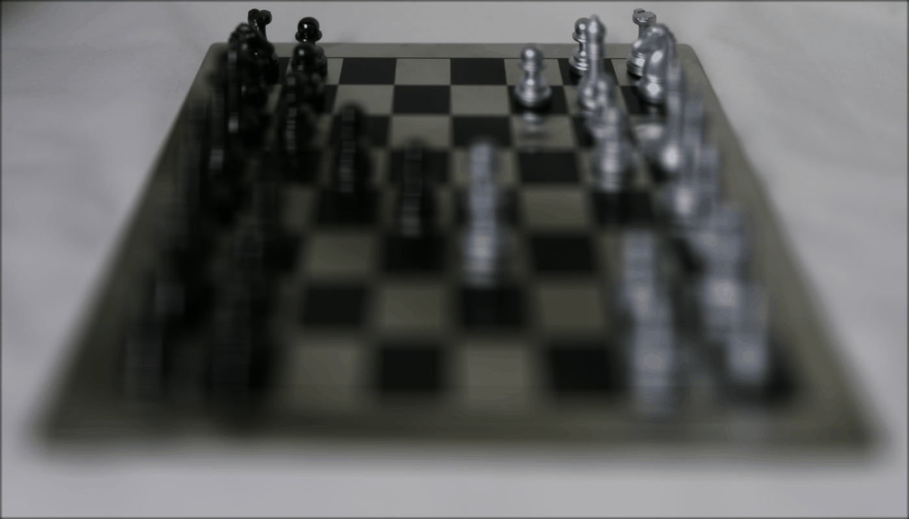
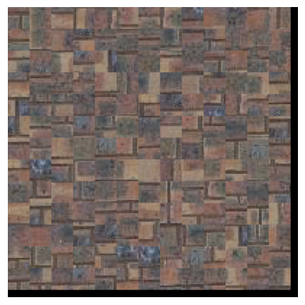
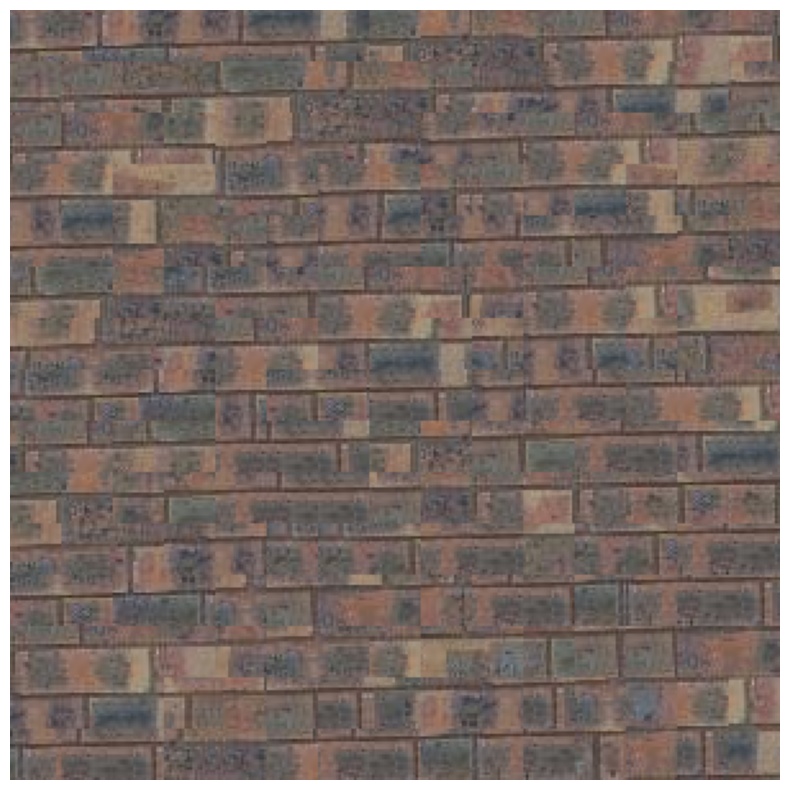
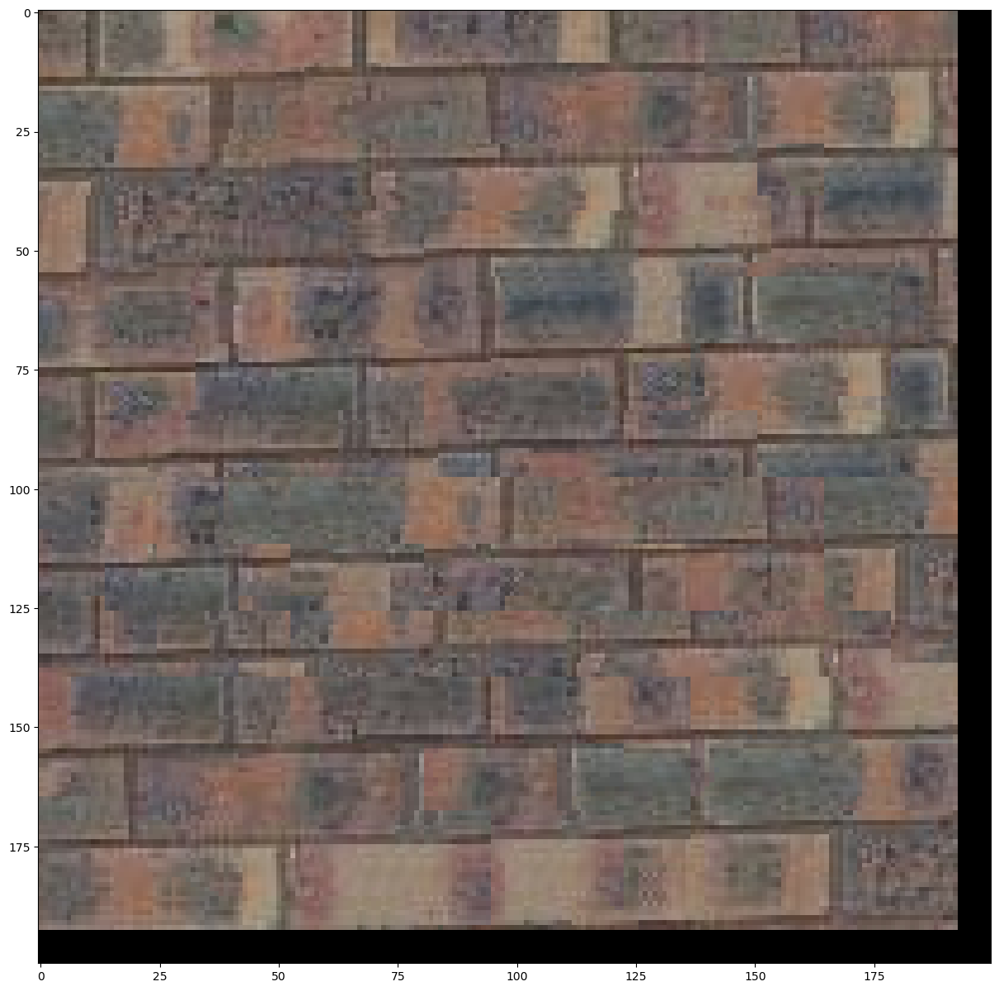

1.Depth Refocusing
The objects that are far away move very little when moving the camera, while objects that are close move a lot.
Therefore, calculating the average of the images taken over a grid gives a images that focus on the far away images.
Following on this, we can calculate the shift for each image towards the center image.
We can find the positions of camera from the file name, and compute the distance between camera positions to be the shift.
Then, multiply the shifts by a facter alpha to change the refocused depth to implement depth refocusing
Images refocues at various depths:
Gif result:

Overview
Following the algorithm described in SIGGRAPH 2001 paper by Efros and Freeman, I implemented various texture synthesis functions and did texture transfering.
1.Randomly Sampled Texture
Firstly, implement a naive approach to do texture synthesis. Randomly sample patches from the input, and fill up the output image with random samples.
Randomly sampled texture synthesis result using bricks:

Sample: Bricks

Randomly sampled texture synthesis (patch_size = 15)
2.Overlapping Patches
Method
For the first patch, I still randomly choose a patch from the input.
For the other patches, define an overlapping region according to current output, and create a template.
Calculate the difference in the overlapping region for each possible patches in the input sample, and choose a random patch that is similar enough to the template.
Finally paste that chosen patch to the output, and repeat until the whole output image is filled up.
Helper functions:
As suggested, I implemented two helper functions: ssd_patch and choose_sample.
ssd_patch takes in a template, which is the target region in the output; a mask, which denotes the overlapping region; and the input image.
The function computes the difference between each possible patch with the template in the overlapping region, and returns a map denoting the costs for each patch.
It uses the formula sd_cost = ((M*T)**2).sum() - 2 * cv2.filter2D(I, ddepth=-1, kernel = M*T) + cv2.filter2D(I ** 2, ddepth=-1, kernel=M) to compute the ssd cost.
For pixels that are too close to the border such that it cannot represent a full patch, set their ssd costs to be the maximum value.
choose_sample takes in a map of costs for each patch and a value tol. All patches with cost higher than tol will be filtered out,
and the function chooses a random patch from the remaining patches.
Texture synthesis result using overlapping patches:
Randomly sampled texture synthesis (patch_size = 15)

Texture synthesis using overlapping patches (patch_size = 35, overlap = 15)
Comparing with result using random samples, the edges between patches are much smoother, because we only choose samples that are similar to each other in the overlapping region.
But we can still see some "cuts" between pathces.
3.Seam Finding
Method
To remove edge artifacts from the overlapping patches, I implemented seam finding to find a good "cut" in the overlapping region instead of simply replacing.
After finding the best random patch as described in part two, I find the overlapping region in the chosen patch.
Using the provided helper function cut, I find the best cut in vertical overlapping region and best cut in horizontal overlapping region, and combined the two cut masks.
Finally, use the cut mask to paste part of the new patch to the output image to avoid edge artifacts.
Texture synthesis result using overlapping patches and seam finding:
Texture synthesis using overlapping patches (patch_size = 35, overlap = 15)

Texture synthesis using overlapping patches and seam finding (patch_size = 25, overlap = 11)
Comparing with result without seam finding, there are much less "edges" in the result.
4.Texture Transfer
Method
Now that we achieved great results from texture synthesis, we can transfer the texture to a target image using a similar algorithm.
After computing the cost for each patch comparing to the overlapping region, add another cost for the cost between the target guidance image and the patch.
To do this, find the current patch region in the guidance image to be the template, and use a mask of all 1s to compare the whole patches.
Reuse the ssd_patch with guidance template and guidance mask to compute guidance cost, and combine both costs with weight alpha to find the final cost.
Use the final cost to choose a patch that has smooth transition in the overlapping region and has similar pattern as guidance image.
Reuse seam finding to get the best cut to avoid edges and paste the patch into the output.
Texture transfering results:
Bells & Whistles: Iterative Texture Transfer
Method
To get better results for texture transferring,
we can iterate for several rounds with smaller patch_size, smaller overlap and smaller alpha in each iteration.
In each iteration, I can update the output image, which shows the details in guidance image better.
Compare interative approach and naive approach:
Naive Approach uses patch_size: 15, overlap = 7, alpha=0.8
Iterative Approach uses initial patch_size: 25, overlap = 11, alpha=0.8 and 3 iterations
Only with 3 iterations, the facial details such as eyes, nose and mouth are much better than the naive approch, even though the initial patch size is much bigger for iterative appoach.